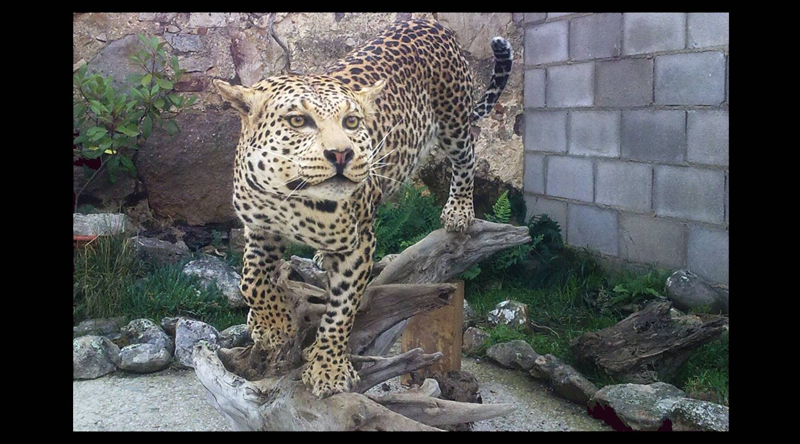
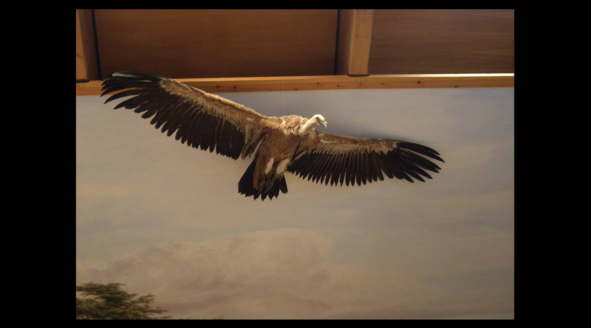
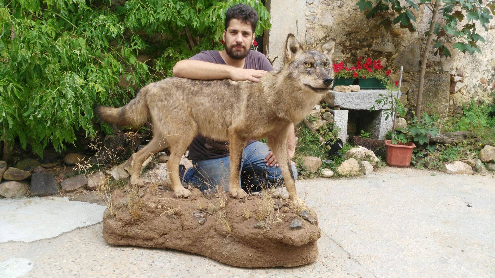
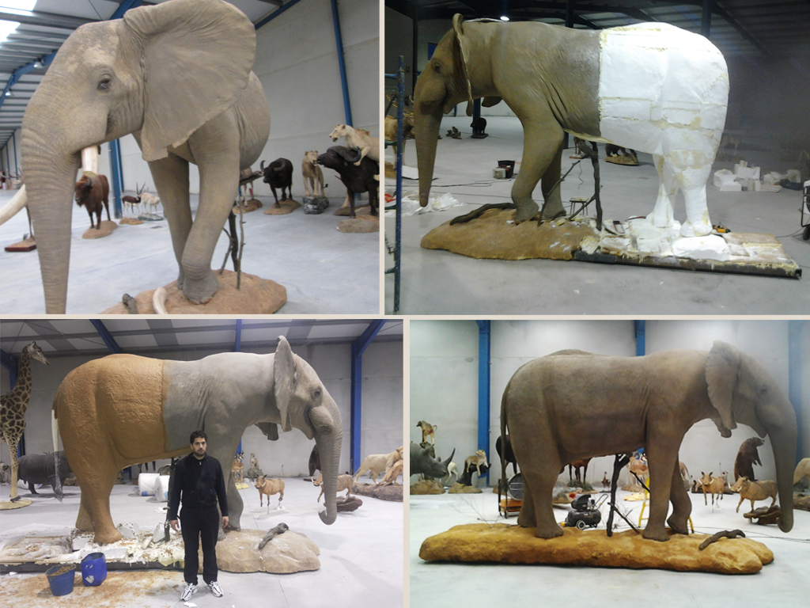
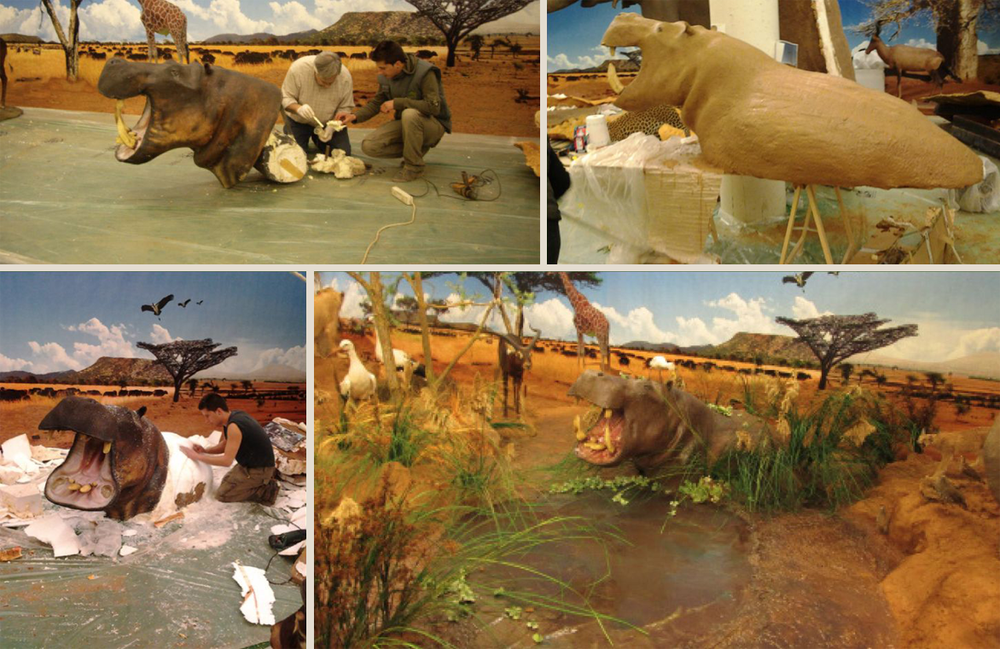
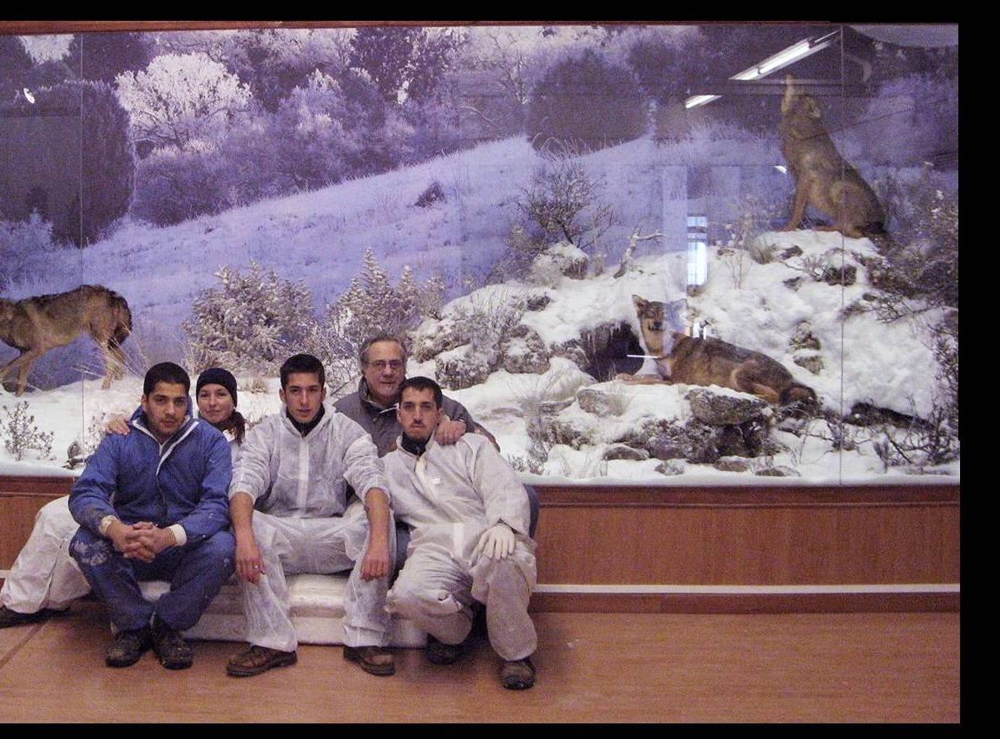

Taxidermy, dioramas, replicas & restoration.
Each piece is created according to the specific request of the client, drawing on detailed research into anatomy, sculpture, painting and tanning for every species we work with.
Each mount, recreated to order.
Each unique taxidermy mount is created according to the specific request of the client. We carry out detailed research into every species' anatomy, faithfully recreating its musculature and gesture, and use high-quality materials so mounts preserve their condition over the years.



Wolf mount, studio archiveUnique spaces, built to scale.
We create, design and produce large and small-scale dioramas for museums, exhibitions, shops, offices and homes. We faithfully recreate unique spaces, always keeping in mind the geological and geographical peculiarities of each environment, along with its flora and fauna — from desert and polar landscapes to jungles and ponds.
We use a range of scenographic techniques to create balanced, attractive scenery, with our team taking care of every single detail.
From armature to finished habitat.



Exact replicas, faithfully reproduced.
We make exact replicas of whole animals, heads, horns and fangs/tusks — useful where an original specimen can't or shouldn't be mounted directly, without compromising on the detail of the finished piece.
Repair, restoration and missing pieces.
Our maintenance, repair and restoration service covers cleaning, gesture changes, replacement of eyes and horns, degreasing and whitening. Where a piece is missing parts, we sculpt replacement grafts — and can even adapt damaged parts or existing shoulder mounts into new habitat pieces.
Have a piece in mind?
Tell us about the mount, restoration or diorama you have in mind.